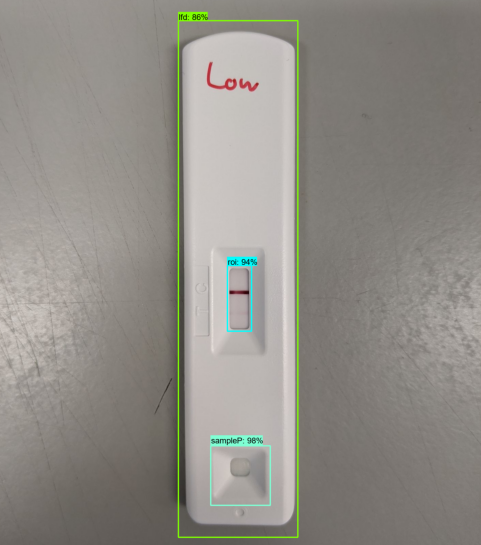
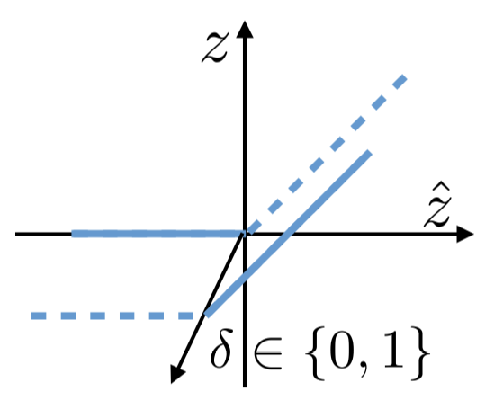
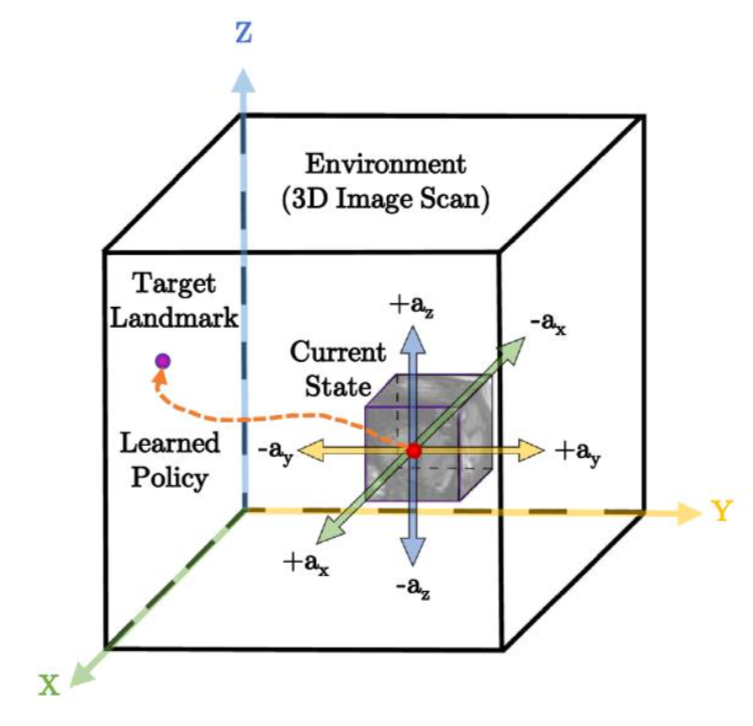

|
James Dorricott
I am a machine learning engineer at Abingdon Health, where I work on computer vision models for interpreting rapid diagnostic tests.
Before studying for an MSc in Artifical Intelligence, I worked in equity research at Exane BNP Paribas, a global equities business. Before that, I worked in equity analytics at sell-side spinout Libra Investment Services.
I completed my undergraduate degree in physics at the University of York.
Email /
LinkedIn /
GitHub /
Twitter
|
|
|
Abingdon Health
I developed AppDx®, an ML-powered test reader recently out of stealth mode. I am the co-inventor of the product and operate as the senior ML engineer and engineering lead.
|
|

|
AppDx® AI Test Reader
James Dorricott, Neeraj Adsul
Abingdon Health, 2021 - Present
[product launch] [UK patent]
AppDx® uses real-time object detection and image classification algorithms to automate the visual reading of lateral flow rapid diagnostic tests. The deep learning software operates on-device and can be integrated into healthcare apps using the AppDx® SDK.
|
|
MSc at Imperial
I obtained an MSc in Artifical Intelligence from Imperial College London, completing coursework in symbolic AI, machine learning, deep learning, computer vision, natural language processing, optimisation, algorithmic fairness, and ethics.
I worked on machine learning safety for my thesis and also completed a group software engineering project.
|
|

|
Advanced Input Domain Splitting for Neural Network Verification
James Dorricott, Elena Botoeva
MSc AI Individual Project, 2020
[report] [slides]
Domain splitting is an effective technique for the verification of neural networks with high input-dimensionality. By using mixed-integer programming to find optimal splits, this thesis improves on bisection with a method that provably simplifies the verification problem.
|
|

|
Anatomical Landmark Detection and Demonstration Interface (ALADDIN)
James Dorricott, Alex Gaskell, Maleakhi Wijaya, Harry Coppock, Olle Nilsson, Faidon Mitzalis
MSc AI Software Engineering Project, 2020
[code and demo]
ALADDIN is a graphical user interface for running artifical landmark detection agents trained using reinforcement learning. The software can also log demonstration data and use the expert data to accelerate learning with extensions of the DQN algorithm.
|
|
Libra and Exane
At Libra Investment Services, I worked with Apollo®, a times series asset pricing model that won Man Group's top award for submitted trade ideas, beating a number of sell-side banks.
At Exane BNP Paribas, I supported the deputy head of research and was a memeber of the investment review committee. I also designed my own earnings season research product.
|
|